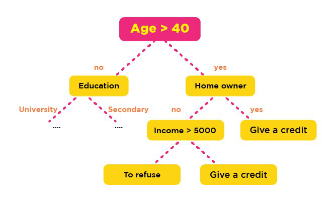
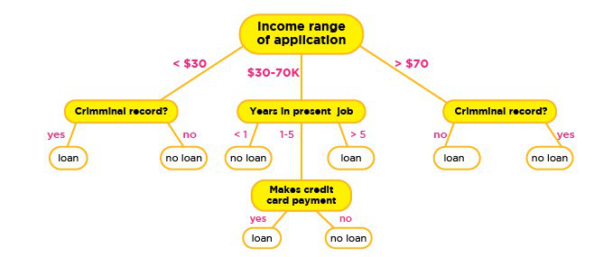

Mengenal Decision Tree dan Manfaatnya¶
Setiap orang tentu menginginkan sebuah pengambilan keputusan yang tepat dan efisien tak terkecuali sebuah perusahaan. Untuk itu banyak sekali perusahaan yang membutuhkan suatu media seperti Business Intellegence guna membantu dalam pengambilan keputusan yang tepat.
Namun, hal tersebut tidak akan berarti tanpa adanya konsep decision tree (pohon keputusan). Decision tree adalah salah satu metode klasifikasi yang paling populer, karena mudah untuk diinterpretasi oleh manusia. Decision tree adalah model prediksi menggunakan struktur pohon atau struktur berhirarki.
Konsep dari pohon keputusan adalah mengubah data menjadi decision tree dan aturan-aturan keputusan. Manfaat utama dari penggunaan decision tree adalah kemampuannya untuk mem-break down proses pengambilan keputusan yang kompleks menjadi lebih simple, sehingga pengambil keputusan akan lebih menginterpretasikan solusi dari permasalahan.
Nama lain dari decision tree adalah CART (Classification and Regression Tree). Dimana metode ini merupakan gabungan dari dua jenis pohon, yaitu classification tree dan juga regression tree. Untuk memudahkan, berikut ilustrasi dari keduanya.

Classfication Tree. Credit: Pronoz
Untuk gambar diatas merupakan contoh dari classification tree, sedangkan gambar dibawah merupakan contoh dari regression tree.
Regression Tree. Credit: Brandewinder.com
Decision tree juga berguna untuk mengeksplorasi data, menemukan hubungan tersembunyi antara sejumlah calon variabel input dengan sebuah variabel target. Decision tree memadukan antara eksplorasi data dan pemodelan, sehingga sangat bagus sebagai langkah awal dalam proses pemodelan bahkan ketika dijadikan sebagai model akhir dari beberapa teknik lain.
Dalam beberapa aplikasi, akurasi dari sebuah klasifikasi atau prediksi adalah satu-satunya hal yang ditonjolkan dalam metode ini, misalnya sebuah perusahaan direct mail membuat sebuah model yang akurat untuk memprediksi anggota mana yang berpotensi untuk merespon permintaan, tanpa memperhatikan bagaimana atau mengapa model tersebut bekerja.

Decision Tree atau CART. Credit: Towards Data Science
Kelebihan lain dari metode ini adalah mampu mengeliminasi perhitungan atau data-data yang kiranya tidak diperlukan. Sebab, sampel yang ada biasanya hanya diuji berdasarkan kriteria atau kelas tertentu saja.
Meski memiliki banyak kelebihan, namun bukan berarti metode ini tidak memiliki kekurangan. Decision tree ini bisa terjadi overlap, terutama ketika kelas dan kriteria yang digunakan sangat banyak tentu saja dapat meningkatkan waktu pengambilan keputusan sesuai dengan jumlah memori yang dibutuhkan.
Dalam hal akumulasi, decision tree juga seringkali mengalami kendala eror terutama dalam jumlah besar. Selain itu, terdapat pula kesulitan dalam mendesain decision tree yang optimal. Apalagi mengingat kualitas keputusan yang didapatkan dari metode decision tree sangat tergantung pada bagaimana pohon tersebut didesain.
Terlepas dari kekurangan dan kelebihan dari decision tree, metode ini banyak digunakan lebih lanjut dalam berbagai pengolahan data. Mulai dari data mining dan juga machine learning. Dalam dunia kerja, decision tree sendiri sangat berguna untuk penilaian credit scoring. Jika anda pernah mengajukan kredit yang diproses secara instan, nah anda sudah mempunyai pengalaman dari decision tree.
Implemetasi Decision Tree¶
'Dataset Titanic'¶
# This Python 3 environment comes with many helpful analytics libraries installed
# It is defined by the kaggle/python docker image: https://github.com/kaggle/docker-python
# For example, here's several helpful packages to load in
import numpy as np # linear algebra
import pandas as pd # data processing, CSV file I/O (e.g. pd.read_csv)
# Input data files are available in the "../input/" directory.
# For example, running this (by clicking run or pressing Shift+Enter) will list the files in the input directory
import os
print(os.listdir("../input"))
# Any results you write to the current directory are saved as output.Titanic dengan pohon keputusan¶
Menggunakan DecisionTreeClassifier sklearn untuk membuat gambar pohon untuk selamat dari titanic
in [2]¶
import numpy as np
from sklearn.tree import DecisionTreeClassifier, export_graphviz
from sklearn.model_selection import train_test_split
import graphviz
from subprocess import check_call
from IPython.display import Image as PImage
from PIL import Image, ImageDraw, ImageFont
df = pd.read_csv('../input/train.csv', error_bad_lines=False)
df.head(3)out [2]¶
| PassengerId | Survived | Pclass | Name | Sex | Age | SibSp | Parch | Ticket | Fare | Cabin | Embarked | |
|---|---|---|---|---|---|---|---|---|---|---|---|---|
| 0 | 1 | 0 | 3 | Braund, Mr. Owen Harris | male | 22.0 | 1 | 0 | A/5 21171 | 7.2500 | NaN | S |
| 1 | 2 | 1 | 1 | Cumings, Mrs. John Bradley (Florence Briggs Th... | female | 38.0 | 1 | 0 | PC 17599 | 71.2833 | C85 | C |
| 2 | 3 | 1 | 3 | Heikkinen, Miss. Laina | female | 26.0 | 0 | 0 | STON/O2. 3101282 | 7.9250 | NaN | S |
Sebelum kita melanjutkan, mari kita lakukan sedikit persiapan data.
Mari kita lepaskan NaN apa pun - ada opsi lain tentu saja untuk NaN, tetapi kami tertarik untuk membuat pohon keputusan yang tidak membuat penggolong paling akurat yang pernah ada
df = df.dropna(axis=1)
df = df.drop(['Name', 'Ticket'], axis=1)Sekarang pohon keputusan yang akan kita gunakan tidak bekerja dengan baik dengan data kategorikal, jadi mari kita gunakan fungsi get_dummies panda untuk membuat satu pengodean panas dari kolom yang merepotkan
Kami juga akan membagi data menjadi set pelatihan dan tes
X = pd.get_dummies(df.drop('Survived', axis=1))
Y = pd.get_dummies(df['Survived'])
X_train, X_test, y_train, y_test = train_test_split(X, Y, test_size=0.33, random_state=42)Hanya karena ketertarikan, ini adalah bagaimana get_dummies mengubah data
in [5]¶
X_train.head(3)out [5]¶
| PassengerId | Pclass | SibSp | Parch | Fare | Sex_female | Sex_male | |
|---|---|---|---|---|---|---|---|
| 6 | 7 | 1 | 0 | 0 | 51.8625 | 0 | 1 |
| 718 | 719 | 3 | 0 | 0 | 15.5000 | 0 | 1 |
| 685 | 686 | 2 | 1 | 2 | 41.5792 | 0 | 1 |
Jadi mari kita latih classifier!
Seperti yang Anda lihat di bawah ini, kami telah menetapkan max_depth = 3 dan min_samples_split = 20 untuk classifier ini. Itu untuk mencegah overfitting
clf = DecisionTreeClassifier(max_depth=3, min_samples_split=20)
clf = clf.fit(X_train, y_train)in [7]¶
clf.score(X_test, y_test)out [7]¶
0.8135593220338984in [8]¶
with open("tree1.dot", 'w') as f:
f = export_graphviz(clf,
out_file=f,
max_depth = 3,
impurity = True,
feature_names = list(X_train),
class_names = ['Died', 'Survived'],
rounded = True,
filled= True )
check_call(['dot','-Tpng','tree1.dot','-o','tree1.png'])out [8]¶
0in [9]¶
img = Image.open("tree1.png")
draw = ImageDraw.Draw(img)
img.save('sample-out.png')
PImage("sample-out.png")out [9]¶
Referensi :
https://medium.com/iykra/mengenal-decision-tree-dan-manfaatnya-b98cf3cf6a8d
https://www.kaggle.com/hamishdickson/playing-with-decision-tree-classifiers/data